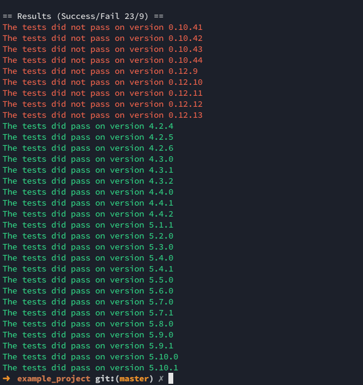

Test your JavaScript modules simultaneously in all the different versions of NodeJS
Image you have either a library or a application that you need to maintain to work on many different versions of NodeJS, or want to make sure it works in the latest versions.
Then autochecker will help you with exactly that!
Globally:
npm install -g autochecker
Or just in your project:
npm install --save-dev autochecker
autochecker
All available versions tested
autochecker 0.10 5.8
Only specified versions tested
autochecker 0.10
Only one specified version tested with verbose output
TEST_LIMIT=10 autochecker
Set the limit of number of parallel tests